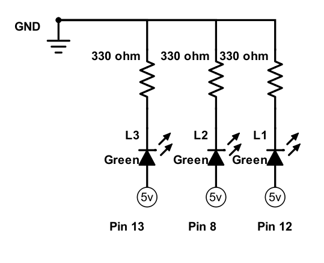
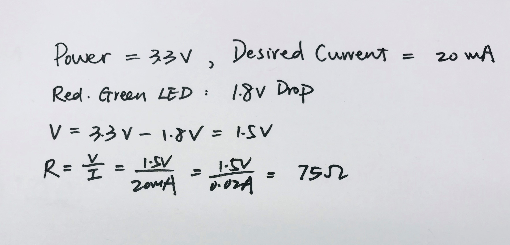

Alice's Assignment 1!
Schematic
This schematic shows three individual circuits. Each has a 100 ohm resistor and a green LED light
Calculations
This is the calculations I used to determine the size of the resistors.
Circuit

An Arduino board was used to connect the circuits. The Arduino board is attached to my computer, which provides code instructions.
Code
/*
HCDE 439 Assignment #1
Alice Li
Jan.14th, 2019
*/
// the setup function runs once when you press reset or power the board
void setup() {
//Initialize LED_BULTIN as an output
pinMode(LED_BUILTIN, OUTPUT);
//Initialize digit pin 8 as an output
pinMode(8, OUTPUT);
//Initialize digit pin 12 as an output
pinMode(12, OUTPUT);
}
// the loop function runs over and over again forever
void loop() {
// turn the LED on (HIGH is the voltage level)
digitalWrite(LED_BUILTIN, HIGH);
// wait for a second
delay(1000);
// turn the LED off by making the voltage LOW
digitalWrite(LED_BUILTIN, LOW);
// turn the LED on (HIGH is the voltage level)
digitalWrite(8, HIGH);
// wait for 2 seconds
delay(2000);
// turn the LED off by making the voltage LOW
digitalWrite(8, LOW);
// turn the LED on (HIGH is the voltage level)
digitalWrite(12, HIGH);
// wait for 3 seconds
delay(3000);
// turn the LED off by making the voltage LOW
digitalWrite(12, LOW);
}
Circuit Operation

This gif shows the operation of the circuit. With the first LED blinking for one second, the second two seconds and the third three seconds.